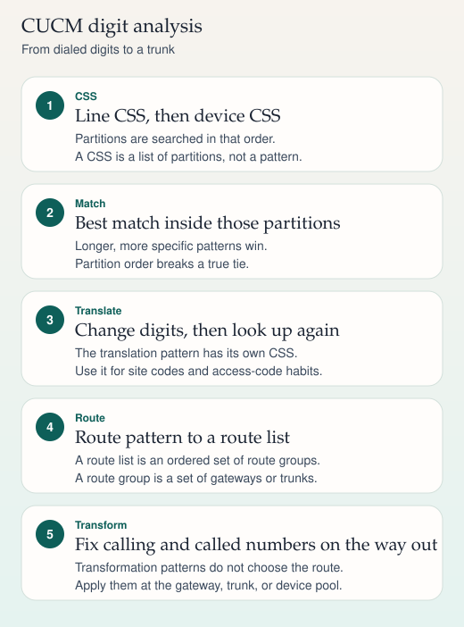

Cisco Unified CM
Dial plan
Partitions and calling search spaces decide what a caller is allowed to dial. Route patterns, lists, and groups decide where a permitted call leaves. Translation and transformation change the digits at two different moments.

On a phone, swipe a wide ladder sideways. The steps below repeat the same sequence.
The objects
| Object | What it is |
|---|---|
| Partition | A bucket of patterns that share a reachability policy. Patterns live in partitions. A phone does not "have" a partition as its identity; its line and patterns do. |
| Calling search space | An ordered list of partitions. It answers "which patterns is this caller allowed to see?" |
| Route pattern | A match that points at a gateway, a trunk, or a route list. It can also block a call. |
| Route list | An ordered list of route groups. CUCM tries them in preference order. Digit changes can be set per member. |
| Route group | Gateways or trunks treated as one pool, with a distribution such as top down or circular. |
| Translation pattern | A match that changes digits and then runs digit analysis again. |
| Transformation pattern | A calling-party or called-party change applied as the call egresses. It does not pick the route. |
How a lookup actually walks
In the line/device model, CUCM concatenates the line's calling search space with the device's calling search space, line first. The line CSS is the usual place to express class of service (internal only, national, international). The device CSS is the usual place to express which site's gateways are reachable. Emergency patterns belong in a partition that every one of those combined spaces can see.
Inside the partitions the caller can see, the best match wins. A more specific pattern beats a more general one. If two patterns are equally specific, the one in the earlier partition wins. An urgent pattern can route immediately instead of waiting for the interdigit timer (T302). The default of that timer is commonly 15 seconds; confirm it on the cluster rather than assuming nobody changed it.
Wildcards you will see in route patterns:
Xis one digit, 0 through 9.[2-9]is a range. A leading^inside the brackets excludes digits.!is one or more digits and is greedy. Pair it with a plan, or it will wait for the interdigit timer.- The dot in
9.55501XXis not a wildcard. It marks the boundary for the PreDot discard instruction.
A lab call
Fictional numbers only. A lobby phone may dial internal extensions and 911. A staff line may also dial the lab's outside numbers. The staff line CSS includes partitions PT-Internal, PT-Lab-PSTN, and PT-Emergency. The lobby line CSS includes only PT-Internal and PT-Emergency.
Someone dials 95550100. The route pattern 9.55501XX in PT-Lab-PSTN matches. Discard PreDot leaves 5550100. The route pattern points at route list RL-PSTN, whose first route group contains the site gateway at 192.0.2.40. A called-party transformation on that trunk prefixes +1 if the provider wants E.164. The transformation did not decide which trunk to use. The route pattern and route list did.
A translation pattern does a different job. Dialing 2001 can match a translation in PT-Internal, rewrite the called number to a full URI or to 5550101, and analyze again using the CSS configured on the translation pattern. There is also a checkbox, Use Originator's Calling Search Space, on modern translation patterns. If you leave the translation CSS as None and you do not use the originator's space, the second lookup can see only the null partition. Patterns in the null partition are visible from every calling search space, which is useful and dangerous.
Local route group
A local route group lets one route pattern serve every site. The route list contains the placeholder Standard Local Route Group. CUCM substitutes the route group named on the calling device's device pool. Site A egresses 192.0.2.40. Site B egresses a different gateway. You stop cloning national patterns per site.
Hunting from one route group to the next depends on the cause code and on the route list. User busy does not always mean "try the next trunk." Read the route list settings before you promise failover.
Sources
- Cisco Unified Communications Manager system and administration guides: partitions, calling search spaces, route plans, translation patterns, transformation patterns, local route group
- Cisco line/device dial-plan model, taught in the collaboration design guides